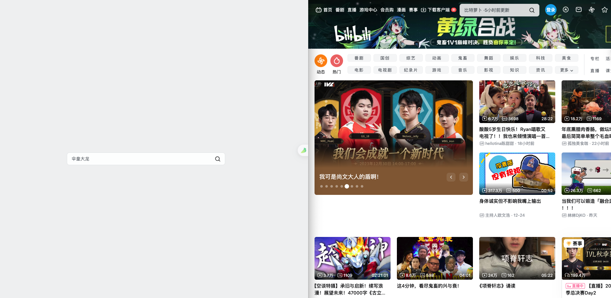
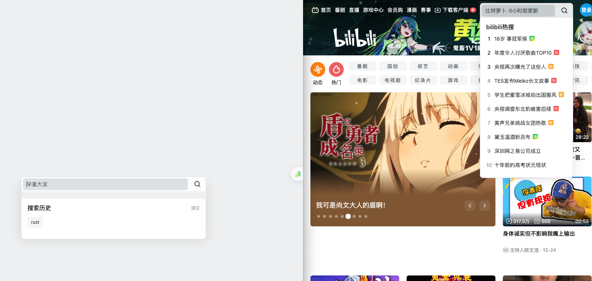
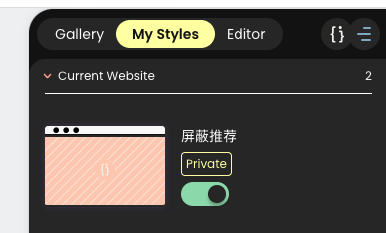

背景
我是 B 站的重度用户，经常要在 B 站上看一些知识类的视频，一般是使用网页版。但是，使用网页版有个问题是经常会被 B 站的首页推荐、动态栏的红色标记和搜索框的热搜吸引走注意力，不自觉地浪费时间。因此，我希望简化 B 站的页面，让网页版的 B 站更契合我使用习惯的同时，减少大数据推荐对我的干扰。于是，我借助 chrome 的 stylish 插件配置了一个简化的 UI 界面。
效果对比
左边是简化后的，右边是原始页面。
首页

可以看到各个分区、推荐都没有了，保证进入 B 站只能搜索自己需要的视频，去除一切干扰项。
搜索框

移除了热搜，只保留了搜索历史，防止搜索的时候被热门词条吸引。
搜索结果页
搜索结果页则是隐藏了头部导航条。因为登录账号后导航条的动态栏会有显示未读动态的小红点，让人忍不住点进动态页，看看关注的人新发的视频。
点进某个视频后，对应视频页的导航栏也被移除了，原因同上。
具体实现
一、安装 stylish 插件

该插件可以让用户自定义 css 样式，并注入到特定的页面中。
二、新建自定义样式
进入 B 站主页后，点击 stylish 插件，此时会出现悬浮窗，切换到 editor 页面，如下图所示：

1 是一组自定义 css 样式的名称，2 是代码块，每个代码块包含一组 3 和 4。其中 4 是自定义的 css 样式，3 则是样式生效的网址。
读者只需要按照以下配置拷贝到 stylish 中即可，标题是每个代码块的 domains。
www.bilibili.com/
1 | /* 屏蔽广告 */ |
www.bilibili.com
1 | /* 工具栏可视 */ |
search.bilibili.com
1 | /* 屏蔽搜索热搜 */ |
bilibili.com
1 | /* 屏蔽导航栏 */ |
space.bilibili.com
1 | /* 屏蔽个人信息banner */ |
三、应用样式
拷贝完成后点击保存，此时切换到My styles，将按钮切换到激活态即可应用。

总结
本文介绍了利用 stylish 插件简化 B 站 UI，以防止自控力被大数据干扰项不断浪费的问题。B 站上有很多优秀的内容，但是也在不可避免的快餐化。读者可以基于这个插件，对其他常用的知识网站进行一定的简化，以保证日常工作流和学习流不会被无端分心。